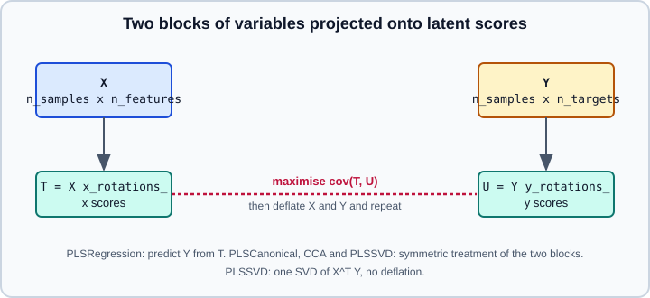
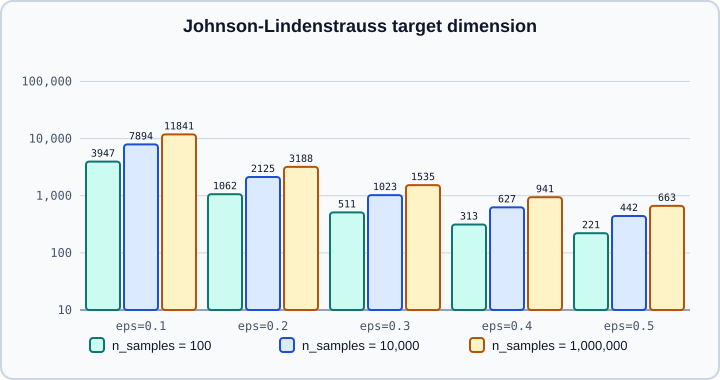

PLS, CCA & Random Projection
|
This content was generated with the assistance of AI and should be verified against the official documentation before being relied on in production. |
This page covers sklearn.cross_decomposition (partial least squares and canonical correlation) and sklearn.random_projection. The first family finds directions in two blocks of variables that are related to each other; the second reduces dimension with a random matrix and no learning at all. Neither part uses PyTorch or TensorFlow. Examples were run on Python 3.13 with scikit-learn 1.9.1, NumPy 2.5.4 and SciPy 1.18.1 on 2026-10-31.
Principal component analysis, which reduces dimension without looking at the target, is in PCA, TruncatedSVD & NMF. The linear models that PLS competes with are in Linear Models & Logistic Regression. The mathematical background (SVD, covariance and linear projections) is in Math for Machine Learning.
Cross decomposition
Suppose you have two matrices that describe the same samples: \(X\) with \(p\) predictors and \(Y\) with \(q\) responses (a spectrum and several concentrations, gene expression and clinical measures, text features and image features). PCA on \(X\) ignores \(Y\), so the directions of largest variance may be irrelevant to the response. Cross decomposition looks for pairs of latent directions, one in \(X\)-space and one in \(Y\)-space, whose scores are strongly related, then removes (deflates) what they explain and repeats.

The four estimators differ in the criterion and in what they let you do:
| Estimator | What it computes | Typical use |
|---|---|---|
|
Latent components that maximise the covariance between the scores of X and Y; Y is regressed on the X scores. Has |
Regression with many correlated predictors, one or several targets |
|
Same covariance criterion with a symmetric deflation of both blocks (the PLSW2A scheme in the literature) |
Studying the relationship between two blocks |
|
A special case of PLS that maximises correlation rather than covariance, by inverting the within-block covariance matrices |
Two blocks with more samples than variables |
|
One SVD of \(X^T Y\), no deflation; keeps the top singular vectors |
Quick exploratory projection; equivalent to |
n_components is bounded: for PLSRegression by min(n_samples, n_features), for PLSCanonical additionally by the number of targets; the estimators raise a ValueError if you ask for more. The attributes you will use are x_scores_ and y_scores_ (training scores), x_weights_ and y_weights_, x_loadings_, x_rotations_ and y_rotations_ (the matrices that map the original data to scores) and, for PLSRegression, coef_. transform(X) projects new X; call transform(X, Y) to get both blocks' scores. CCA inverts \(X^T X\) and \(Y^T Y\), so it is unstable when either block has more columns than samples, whereas PLS stays well behaved there.
PLSRegression for correlated, high-dimensional predictors
PLS regression is a regularised linear model whose strength is controlled by n_components. Because the components are chosen with the target in view, a few of them can carry the predictive signal even when that signal has a small variance in X, where PCA followed by a regression would pick the wrong directions. The experiment builds 120 predictors from a large-variance nuisance factor that is unrelated to the target and a small-variance factor that drives it, with 80 samples.
import numpy as np
from sklearn.cross_decomposition import PLSRegression
from sklearn.decomposition import PCA
from sklearn.linear_model import LinearRegression
from sklearn.model_selection import GridSearchCV, cross_val_score
from sklearn.pipeline import make_pipeline
rng = np.random.RandomState(0)
n, p = 80, 120
nuisance = 5.0 * rng.randn(n, 1) # large variance, unrelated to y
signal = rng.randn(n, 1) # small variance, drives y
X = nuisance @ rng.randn(1, p) + signal @ rng.randn(1, p) + 0.3 * rng.randn(n, p)
y = 2.0 * signal.ravel() + 0.1 * rng.randn(n)
def r2(model):
return round(cross_val_score(model, X, y, cv=5, scoring="r2").mean(), 3)
print("LinearRegression ", r2(LinearRegression()))
print("PCA(1) + LinearRegression", r2(make_pipeline(PCA(n_components=1), LinearRegression())))
print("PCA(2) + LinearRegression", r2(make_pipeline(PCA(n_components=2), LinearRegression())))
for c in (1, 2, 5):
print(f"PLSRegression({c}) ", r2(PLSRegression(n_components=c)))
grid = GridSearchCV(PLSRegression(), {"n_components": range(1, 9)}, cv=5, scoring="r2").fit(X, y)
print("best", grid.best_params_, round(grid.best_score_, 3))
pls = PLSRegression(n_components=2).fit(X, y)
print(pls.x_scores_.shape, pls.x_weights_.shape, pls.x_loadings_.shape, pls.x_rotations_.shape, pls.coef_.shape)
print(pls.predict(X[:2]).shape, pls.transform(X[:2]).shape)LinearRegression 0.99
PCA(1) + LinearRegression -0.136
PCA(2) + LinearRegression 0.996
PLSRegression(1) 0.857
PLSRegression(2) 0.993
PLSRegression(5) 0.993
best {'n_components': 4} 0.995
(80, 2) (120, 2) (120, 2) (120, 2) (1, 120)
(2,) (2, 2)Source: https://scikit-learn.org/stable/modules/generated/sklearn.cross_decomposition.PLSRegression.html
With a single component, PLS already recovers most of the signal (R^2 0.86) while PCA with one component predicts worse than the mean (-0.14), because its first component is the nuisance factor. Once PCA is allowed a second component it catches up; plain LinearRegression also does well in this particular problem because the data are nearly noiseless and the minimum-norm solution is benign, which is not guaranteed in general. Cross-validation over n_components selected 4 here. Predictions for a one-dimensional y are one-dimensional, and coef_ has shape (n_targets, n_features); older releases used a different layout for coef_, so check the shape if you index it.
Two options affect the result. scale=True (the default) standardises X and Y inside the estimator, which is what you want when features have different units: with it, a column multiplied by 100 does not take over the first component, whereas with scale=False it does. And because every component is a linear combination of all the features, standardising and imputing belong in the same pipeline.
The symmetric estimators
PLSCanonical, CCA and PLSSVD treat the two blocks symmetrically and are used to study how the blocks relate. The check below fits each on half of the data and computes, on the other half, the correlation of the paired scores for each component.
import numpy as np
from sklearn.cross_decomposition import CCA, PLSCanonical, PLSRegression, PLSSVD
rng = np.random.RandomState(0)
n = 500
l1 = rng.randn(n) # latent variable shared by both blocks
l2 = rng.randn(n) # latent variable private to each block
latents = np.c_[l1, l1, l2, l2]
X = latents + rng.randn(n, 4)
Y = latents + rng.randn(n, 4)
X_train, Y_train, X_test, Y_test = X[: n // 2], Y[: n // 2], X[n // 2 :], Y[n // 2 :]
def corrs(model, name):
model.fit(X_train, Y_train)
xs, ys = model.transform(X_test, Y_test)
c = [round(float(np.corrcoef(xs[:, i], ys[:, i])[0, 1]), 3) for i in range(xs.shape[1])]
print(f"{name:13s} test correlation of paired scores: {c}")
corrs(PLSCanonical(n_components=2), "PLSCanonical")
corrs(CCA(n_components=2), "CCA")
corrs(PLSSVD(n_components=2), "PLSSVD")
corrs(PLSRegression(n_components=2), "PLSRegression")
print(hasattr(PLSSVD().fit(X_train, Y_train), "predict"), hasattr(CCA().fit(X_train, Y_train), "predict"))
try:
CCA(n_components=5).fit(X_train, Y_train)
except ValueError as e:
print("ValueError:", str(e)[:60])PLSCanonical test correlation of paired scores: [0.669, 0.687]
CCA test correlation of paired scores: [0.647, 0.689]
PLSSVD test correlation of paired scores: [0.669, 0.686]
PLSRegression test correlation of paired scores: [0.666, 0.687]
False True
ValueError: `n_components` upper bound is 4. Got 5 instead. Reduce `n_coAll four find two directions per block whose held-out correlation is about 0.65 to 0.69, so on this well-conditioned problem the choice among them is not decisive. PLSSVD has no predict, while PLSCanonical and CCA do. The correlations are computed on held-out data on purpose: on the training half, a high-dimensional cross decomposition always finds correlated scores, which is overfitting, not structure.
Random projection
The Johnson-Lindenstrauss lemma says that a set of \(n\) points in a high-dimensional Euclidean space can be mapped into a space of dimension
\[ k \;\ge\; \frac{4 \ln n}{\varepsilon^2/2 - \varepsilon^3/3} \]
so that all pairwise squared distances change by at most a factor \(1 \pm \varepsilon\). The target dimension depends on the number of samples \(n\) and the tolerated distortion \(\varepsilon\), not on the original dimension. sklearn.random_projection exploits this with a random matrix, without learning anything from the data except its shape, which makes it cheap and a useful baseline before PCA on very wide data.
johnson_lindenstrauss_min_dim(n_samples, eps=0.1) returns a conservative \(k\). The figure shows how it grows: slowly with \(n\), steeply as \(\varepsilon\) shrinks.

The two estimators differ only in the random matrix:
-
GaussianRandomProjectiondraws entries from \(N(0, 1/k)\). The matrix is dense. -
SparseRandomProjectiondraws entries that are zero with probability \(1 - 1/s\) and \(\pm\sqrt{s/k}\) otherwise, with \(s = 1/\text{density}\). The defaultdensityis"auto", equal to \(1/\sqrt{p}\) (the minimum recommended by Li et al.), and the matrix is stored as a sparse matrix. It is faster and uses less memory with similar embedding quality.
Both take either n_components (an integer, or "auto", the default) or, with n_components="auto", an eps that fixes \(k\) through the bound, stored in n_components_ after fit. If the bound is larger than the number of original features, fit raises a ValueError, because projection would not reduce anything. Output is sparse for sparse input to SparseRandomProjection unless dense_output=True.
import numpy as np
import scipy.sparse as sp
from sklearn.metrics import euclidean_distances
from sklearn.random_projection import (GaussianRandomProjection, SparseRandomProjection,
johnson_lindenstrauss_min_dim)
print(johnson_lindenstrauss_min_dim(n_samples=1e6, eps=0.5))
print(johnson_lindenstrauss_min_dim(n_samples=[1e4, 1e5, 1e6], eps=0.1))
print([int(johnson_lindenstrauss_min_dim(500, eps=e)) for e in (0.1, 0.2, 0.5)])
rng = np.random.RandomState(42)
X = rng.randn(500, 10000)
d0 = euclidean_distances(X, squared=True)[np.triu_indices(500, 1)]
for cls, kw in ((GaussianRandomProjection, {}), (SparseRandomProjection, {}),
(SparseRandomProjection, {"density": 1 / 3})):
for k in (200, 1000):
t = cls(n_components=k, random_state=0, **kw)
Z = t.fit_transform(X)
d1 = euclidean_distances(Z, squared=True)[np.triu_indices(500, 1)]
r = d1 / d0
print(f"{cls.__name__:24s} k={k:5d} density={getattr(t, 'density_', None)} "
f"ratio mean={r.mean():.3f} min={r.min():.3f} max={r.max():.3f}")
t = GaussianRandomProjection(eps=0.5, random_state=0).fit(rng.randn(500, 10000))
print("n_components_ for 500 samples, eps=0.5:", t.n_components_)
Xs = sp.random(500, 10000, density=0.01, format="csr", random_state=0)
print(type(SparseRandomProjection(n_components=300, random_state=0).fit_transform(Xs)).__name__,
type(SparseRandomProjection(n_components=300, random_state=0, dense_output=True).fit_transform(Xs)).__name__)
t = SparseRandomProjection(n_components=100, compute_inverse_components=True, random_state=0)
Z = t.fit_transform(X[:, :500])
print(t.inverse_components_.shape, t.inverse_transform(Z).shape)663
[ 7894 9868 11841]
[5326, 1434, 298]
GaussianRandomProjection k= 200 density=None ratio mean=1.005 min=0.610 max=1.475
GaussianRandomProjection k= 1000 density=None ratio mean=1.000 min=0.822 max=1.218
SparseRandomProjection k= 200 density=0.01 ratio mean=1.000 min=0.631 max=1.487
SparseRandomProjection k= 1000 density=0.01 ratio mean=0.998 min=0.799 max=1.270
SparseRandomProjection k= 200 density=0.3333333333333333 ratio mean=1.001 min=0.639 max=1.436
SparseRandomProjection k= 1000 density=0.3333333333333333 ratio mean=1.000 min=0.811 max=1.199
n_components_ for 500 samples, eps=0.5: 298
csr_matrix ndarray
(500, 100) (500, 500)The ratio of squared distances after to before projection is centred on 1 for all three, and its spread shrinks as \(k\) grows: with 200 components some pairs are off by roughly 40 to 50 percent, with 1000 components by roughly 20 to 30 percent. The bound is a worst-case guarantee for a much larger \(k\), which is why these empirical spreads are wide for a small \(k\). The sparse matrix with the default density is as good as the dense one. The 500 samples with \(\varepsilon = 0.5\) need 298 dimensions, which the "auto" setting found. inverse_transform multiplies by the pseudo-inverse of the components, returns a dense array and is an approximation to the original points only in the sense of the minimum-norm solution; set compute_inverse_components=True to store the dense inverse_components_ once, otherwise it is recomputed on every call.
Because the matrix is random, results depend on random_state. Fix it for reproducibility, and for stability evaluate downstream models over several seeds.
Choosing between the tools
-
Use PCA or TruncatedSVD when the data fit in memory and you want the best linear summary of X; they are optimal for variance, and
TruncatedSVDhandles sparse matrices. -
Use PLSRegression when the predictors are numerous and collinear and you want a low-dimensional supervised summary; tune
n_componentsby cross-validation. -
Use CCA, PLSCanonical or PLSSVD to explore the relation between two blocks of variables.
-
Use random projection when there are millions of features, you cannot afford to fit a decomposition, or you need a data-independent map (new documents can be projected without refitting, and the same matrix can be shared between machines by sharing the seed). Try it before investing in heavier methods, and verify downstream accuracy.
-
For nonlinear structure, see Manifold Learning and, for learned embeddings, Embeddings & Representation Learning.
Pitfalls
-
Components are not features. PLS and random projection produce combinations of every input column, so interpretation needs the weights or loadings, not feature names.
-
Scale before comparing columns. PLS standardises by default (
scale=True); random projection does not, so wide-range features dominate distances. Put a scaler in front inside a Pipeline. -
Select
n_componentson held-out data. Too many PLS components overfit, and scores computed on the training data always look good. -
Do not use CCA with more variables than samples. It inverts the within-block covariances; use PLS or regularise first.
-
Random projection loses accuracy as
epsgrows. The bound is conservative, but the distortion is real, and nearest-neighbour or clustering results can change. -
Keep sparse input sparse. Request
dense_output=Trueonly when needed. -
PLSSVD has no
predict. -
Sign and ordering ambiguity. Weight vectors are defined only up to sign; compare models through scores or predictions, not raw weights.
Older material
Older PLS code often reshapes predict output or transposes coef_ to match the layouts of earlier releases. Such code should be re-checked against the current documentation, because both shapes were revised in past releases. Fixed target dimensions quoted in older random projection articles should be replaced by a call to johnson_lindenstrauss_min_dim for your own sample size and tolerance.